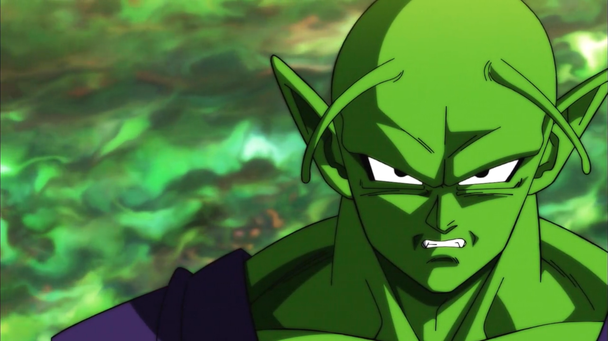

Overview
Piccolo (ピッコロ) is a prominent character from the Japanese manga and anime series Dragon Ball, created by Akira Toriyama. Introduced as the reincarnation of the evil King Piccolo, he initially appears as a villain but later evolves into one of Earth's greatest defenders and a trusted ally of Son Goku.
Early Life
Piccolo was born as the reincarnation of King Piccolo with the goal of avenging his predecessor's defeat. After losing to Goku in the World Martial Arts Tournament, Piccolo's path gradually changes. It is later revealed that he belongs to the extraterrestrial Namekian race from Planet Namek, not the Demon Clan as previously believed.
Personality
Piccolo is generally known for being:
Although once driven by hatred, Piccolo grows into a wise and selfless warrior, forming deep emotional bonds with those he protects.
Role in the Story
Piccolo plays a major role throughout the Dragon Ball series. He first allies with Goku to defeat Raditz and later becomes the mentor of Goku's son, Gohan. His guidance and sacrifices significantly shape Gohan's development as a fighter and individual.
Namekian Powers
As a Namekian, Piccolo possesses unique biological abilities that distinguish him from other warriors. His power grows further through fusion with other Namekians, greatly enhancing his combat strength.
Powers and Abilities
Piccolo demonstrates a wide range of abilities, including:
Through training and new transformations, Piccolo continues to rival the strongest fighters in the universe.
Connection with Gohan
Piccolo shares a powerful bond with Gohan, whom he trains after Goku's death. Their relationship evolves from strict mentorship to a deep, father-like connection, making Piccolo one of the most influential figures in Gohan's life.
Later Development
In Dragon Ball Super, Piccolo regains prominence by training Gohan once again and unlocking new levels of power. Through the Dragon Balls, his hidden potential is released, allowing him to achieve a powerful new transformation known as Orange Piccolo.
Legacy
Piccolo represents:
From a feared enemy to a noble protector, Piccolo's journey stands as one of the most meaningful character transformations in the Dragon Ball franchise.